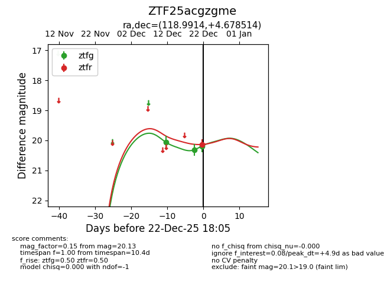
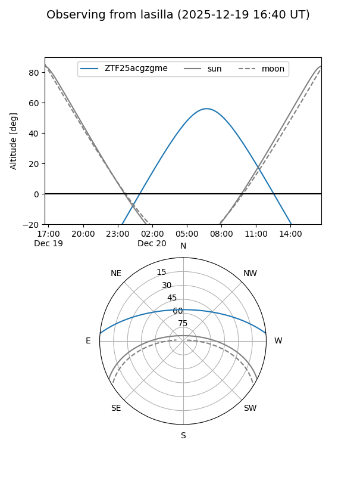
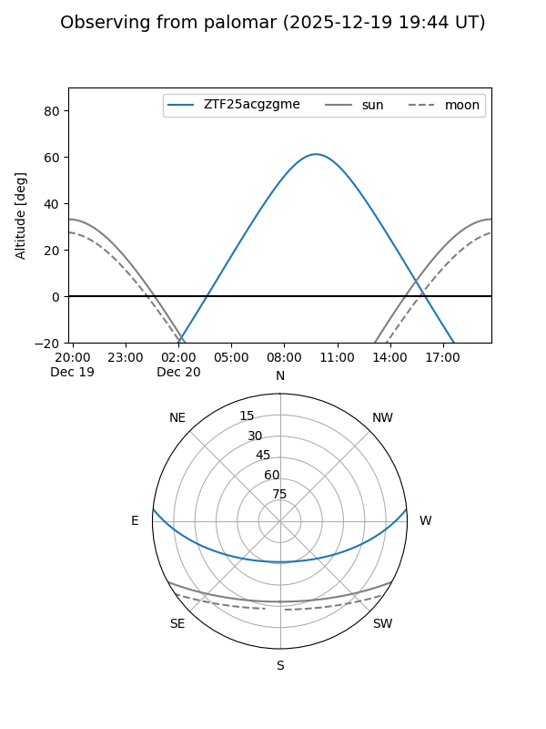
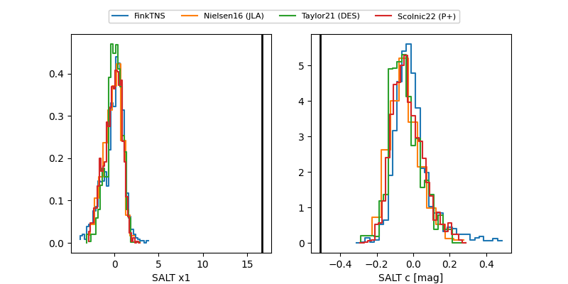

ZTF25acgzgme
Target ZTF25acgzgme at 2025-12-22 18:06
Aliases and brokers:
FINK: fink-portal.org/ZTF25acgzgme
Lasair: lasair-ztf.lsst.ac.uk/objects/ZTF25acgzgme
ALeRCE: alerce.online/object/ZTF25acgzgme
alt names
ZTF25acgzgme (ztf,fink_ztf)
Coordinates:
equatorial (ra, dec) = 118.9914,+4.67851
equatorial (HMS+DMS) = 07:55:57.94,+04:40:42.65
galactic (l, b) = (216.1411,+16.47827)
Flags:
Photometry:
last ztfg=20.19, ztfr=20.13
3 ztfg, 1 ztfr detections
Lightcurve

Visibility


Additional plots
